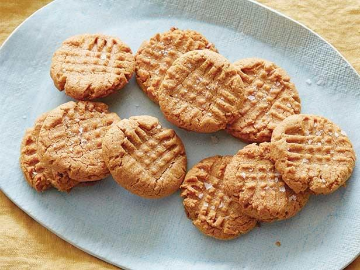

Flourless Peanut Butter Cookies

Description
This quick and easy peanut butter cookie recipe is sure to please your family!
The best recipe for people who want something rich and sweet during the winter.
Ingredients
- 1 cup peanut butter
- ½ cup white sugar
- ⅓ cup packed brown sugar
- 1 egg
- 1 teaspoon vanilla extract
- ½ teaspoon baking soda
- ½ cup semisweet chocolate chips (Optional)
Steps
- Preheat oven to 350 degrees F (175 degrees C).
- Beat peanut butter, white sugar, and brown sugar together in a large bowl with an electric mixer until smooth.
Stir egg, vanilla extract, and baking soda into peanut butter mixture; stir in chocolate chips.
- Drop mixture by small rounded spoonfuls onto a baking sheet about 2 inches apart.
- Bake in the preheated oven until cookies are flattened and golden, about 8 minutes.